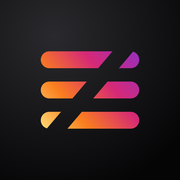

NoFeedPrivacy Policy
NoFeed is built to give you less, not to take more. We run no servers of our own, we have no accounts of our own, and we never see your Instagram account. This page lists everything the app sends anywhere, and why.
What NoFeed never collects
- We never see, receive or store your Instagram username, password, messages, photos, contacts or any other account content. Nothing from Instagram is sent to us, to RevenueCat or to Meta by the app.
- We do not sell personal information.
Signing in to Instagram
When you sign in, you do so directly on Instagram's own website, loaded inside the app with Apple's WebKit. Your login and session cookies are stored only on your device by WebKit, exactly as in Safari. If you save several accounts, each one has its own separate WebKit storage on your device. Everything you do on the website is governed by Instagram's Privacy Policy.
Content filters
To keep hiding the feed and Reels when Instagram changes its website, the app downloads a small public configuration file from GitHub Pages. This request contains no personal information; GitHub may log standard technical data such as your IP address under GitHub's Privacy Statement.
Subscriptions (RevenueCat)
Purchases are processed by Apple. We use RevenueCat to check whether your subscription is active. RevenueCat receives an anonymous app user ID created by the app and your purchase history (for example, which plan you have, a free trial, and when it renews). It does not receive your name, email or Instagram account. See RevenueCat's Privacy Policy.
Onboarding questions
When you first open the app, it asks four short questions: about how much time you spend on Instagram a day, what you open it for, how you feel after scrolling, and what you have tried before. Your answers (fixed options you tap; there is no free text) are used on your device to show your numbers and the paywall headline, and are stored in RevenueCat with the same anonymous app user ID so we can see, in total, who the app helps. The app also records the furthest onboarding screen you reached (for example "screen 7"), so we can see where people stop and make those screens better. This information is not linked to your Instagram account, your name or your email.
Optional feedback
After some use the app may ask "Do you like the app?". Your yes or no answer, the app version, and the option you may tap afterwards (for example "It's slow") are stored in RevenueCat with the same anonymous app user ID. You can skip the question.
Advertising measurement (Meta), only with your permission
NoFeed is advertised on Meta's platforms (Facebook and Instagram ads). Before you sign in, the app asks once, through Apple's "Allow tracking" prompt, whether it may measure which ads work.
- If you do not allow tracking, nothing is sent from the app to Meta: Meta's SDK is not even started. Apple's SKAdNetwork may tell Meta, without any identifier, that an ad led to an install.
- If you allow tracking, Meta's SDK is started and receives your device's advertising identifier (IDFA), the fact that the app was installed and opened, and technical data about the app and device. RevenueCat also sends Meta the start of a free trial or a subscription, with its price, together with that identifier and Meta's anonymous ID, so Meta can tell which ads led to it. No answers to the onboarding questions or feedback are sent to Meta, and nothing from your Instagram account.
You can change your choice at any time in iPhone Settings → Privacy & Security → Tracking. See Meta's Privacy Policy.
Notifications
If you allow notifications, the app checks Instagram's website on your device a few times a day for unread messages and shows a local notification. This happens entirely on your iPhone; no message content or count is sent anywhere.
Settings stored on your device
Your preferences, saved accounts' labels, usage stats and limits are stored locally on your iPhone and are removed when you delete the app.
How long we keep data
RevenueCat keeps purchase records for as long as needed for your subscription and for accounting. Onboarding and feedback answers are kept until we no longer need them to improve the app, or until you ask us to delete them.
Children
NoFeed is not directed to children under 13, and we do not knowingly collect information from them.
Your rights
You can ask us to delete the answers and records linked to your anonymous app user ID; write to the address below and we will help you find it. To stop advertising measurement, turn off tracking for NoFeed in iPhone Settings. To delete Instagram data, use Instagram's own settings. To remove everything NoFeed stored on your device, delete the app.
Changes
If this policy changes, we will update this page and the date above.